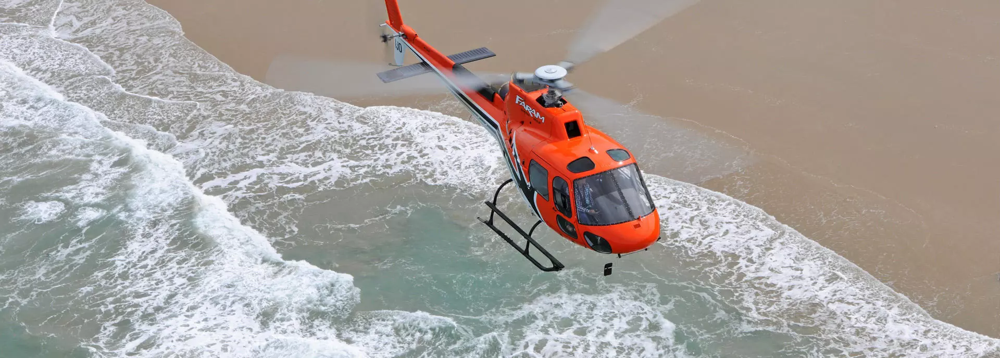
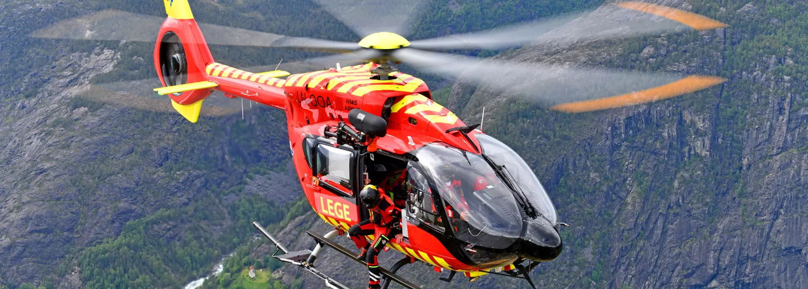
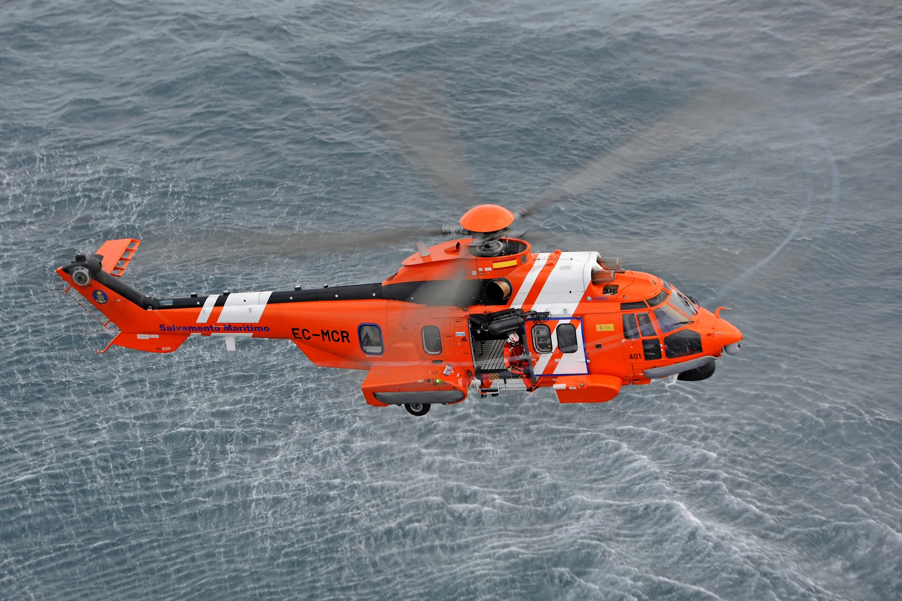

Гражданские вертолеты
Ассортимент гражданских вертолетов Airbus предназначен для безопасных полетов в любых ситуациях при минимальных затратах. От одно- и двухмоторных легких и средних вертолетов до одиннадцатитонных вертолетов — у Airbus есть подходящая продукция для выполнения любых гражданских задач.

РH125 (ранее получивший обозначение AS350 B3e) превосходит все другие одномоторные вертолеты по производительности, универсальности, низким эксплуатационным расходам и низким затратам на приобретение, а также превосходно работает в высоких, жарких и экстремальных условиях. Он входит в семейство Airbus Ecureuil, налет которого по всему миру превышает 40 миллионов часов.

Разработанный для обеспечения отличных характеристик во всем диапазоне полетов, Airbus H145 является новейшим представителем линейки двухмоторных винтокрылых самолетов компании Airbus грузоподъемностью четыре тонны – с заложенными в него возможностями и гибкостью, особенно в высоких и жарких условиях эксплуатации. Компактный по размеру, небольшая занимаемая площадь и большая гибкая кабина этого вертолета делают его предпочтительным самолетом для выполнения различных гражданских и военных задач.

Способность поднимать большую полезную нагрузку, отличная дальность полета и эксплуатационная универсальность делают H225 наиболее экономичным вертолетом для выполнения самых разных задач: от воздушных работ и пассажирских перевозок до правоохранительных органов, а также поисково-спасательных операций.
H225 — выбор коммерческих операторов и правительственных учреждений из-за его дальнего радиуса действия и всепогодных возможностей. Будучи эталоном в своей области, автопилот H225 обеспечивает точность, стабильность, защиту диапазона полета и помощь пилоту, включая специальные верхние режимы поиска и спасения (SAR).